API Integration: Getting Social
Learn how to integrate your tweets, Instagram photos, Google Maps and other social media and APIs to your site. https://hackapalooza.github.io/API-Integration/API Integration: Getting Social
Your Instructor:
Thanks to Pearl Chen and Mark Reale for creating the foundation for today's content
I spy with my API...
Definitions
- What is an API?
- Iframes and Embeds
Show me the code!
- Instagram (iframe)
- Youtube (iframe)
- Vimeo (iframe)
- Eventbrite (iframe)
- Google Maps (iframe)
- Twitter (script)
- Pintrest (script)
Application Programming Interface
In computer programming, an application programming interface (API) specifies how some software components should interact with each other.In practice, many times an API comes in the form of a library that includes specifications for routines, data structures, object classes, and variables.
Interface
In computing, an interface is a shared boundary across which two separate components of a computer system exchange information.The exchange can be between software, computer hardware, peripheral devices, humans and combinations of these.
Client / Server
The client–server model of computing is a distributed application structure that partitions tasks or workloads between the providers of a resource or service, called servers, and service requesters, called clients.
Often clients and servers communicate over a computer network on separate hardware, but both client and server may reside in the same system. A server host runs one or more server programs which share their resources with clients.
A client does not share any of its resources, but requests a server's content or service function. Clients therefore initiate communication sessions with servers which await incoming requests.
Inline Frame (IFrame)
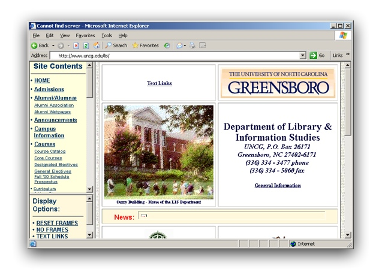IFrame-ception!
An IFrame element may contain another HTML document or even an entire website within the same browser window.In addition to having an independent scrollbar, the IFrame can serve as a link target, be printed and contains viewable source code.
https://developer.mozilla.org/en/docs/Web/HTML/Element/iframe
Generic Iframe Example
<iframe src="somewebsite.com/"
width="612"
height="710"
frameborder="0"
scrolling="no"
allowtransparency="true">
</iframe>
Iframe Options
| Attribute | Description |
|---|---|
name |
As described above, this attribute can be used in conjunction with the target attribute of a link to change the iframe's src |
scrolling |
Can be scrolling="yes" or scrolling="no" . Specifies if a scrollbar should be shown for the content in the frame. Note that using CSS is actually the preferred method for controlling scrolling, but we still use the scrolling attribute to ensure compatibility with older browsers. |
frameborder |
This controls whether there is a border on the frame (frameborder="1") or not (frameborder="0"). As with scrolling, this property really should be controlled via CSS, but we have to stick with frameborder for browser compatibility. By setting frameborder="0", the iframe becomes much less noticeable and the content appears to be part of the main page. |
allowtransparency |
If you want the background of your main page to be visible behind the iframe, you need to enable transparency by adding allowtransparency="true" . |
The Magical <iframe> Tag: An Introduction - Nathan Rohler
Instagram (where to find)
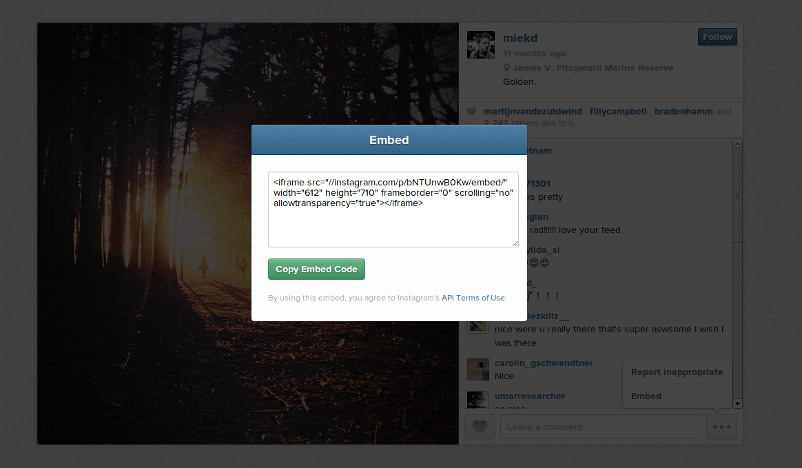Instagram (code)
<iframe src="//instagram.com/p/bNTUnwB0Kw/embed/"
width="612"
height="710"
frameborder="0"
scrolling="no"
allowtransparency="true">
</iframe>
Instagram (example)
Youtube (where to find)
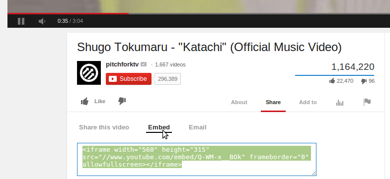Youtube (code)
<iframe width="420"
height="315"
src="//www.youtube.com/embed/Q-WM-x__BOk"
frameborder="0"
allowfullscreen>
</iframe>
YouTube embed options can make your videos look less YouTube-y
YouTube Embedded Players and Player Parameters
Youtube (example)
Vimeo (share button)
Vimeo (embed code)
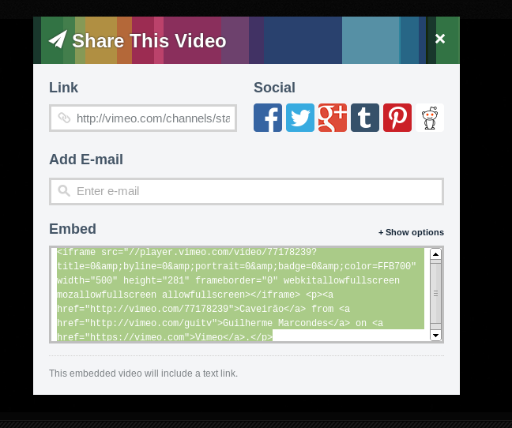Vimeo
Good example, nice clear documentationPlayer Embedding on Vimeo Developer API
<iframe src="//player.vimeo.com/video/77178239?title=0&byline=0&portrait=0&badge=0&color=FFB700"
width="500"
height="281"
frameborder="0"
webkitallowfullscreen
mozallowfullscreen
allowfullscreen>
</iframe>
<p>
<a href="http://vimeo.com/77178239">Caveirão</a> from
<a href="http://vimeo.com/guitv">Guilherme Marcondes</a> on
<a href="https://vimeo.com">Vimeo</a>.
</p>
Vimeo (example)
Caveirão from Guilherme Marcondes on Vimeo.
Eventbrite (where to find)
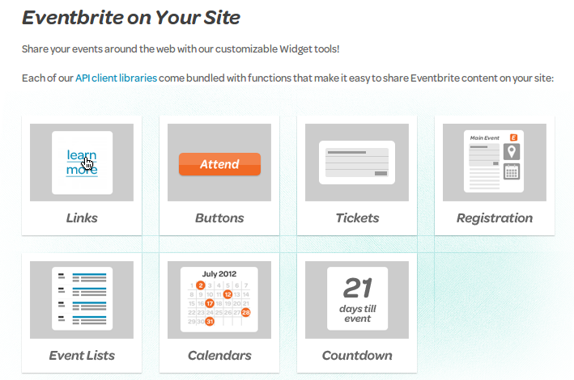 https://developer.eventbrite.com/doc/widgets/Eventbrite Registration
(code + example)
<iframe src="https://www.eventbrite.com/tickets-external?eid=4653432542&ref=etckt&v=2"
frameborder="0"
height="256"
width="100%"
vspace="0"
hspace="0"
marginheight="5"
marginwidth="5"
scrolling="auto"
allowtransparency="true">
</iframe>
Eventbrite Buy Ticket Button
(code + example)
<a href="http://www.eventbrite.com/event/4653432542?ref=ebtn"
target="_blank">
<img border="0"
src="https://www.eventbrite.com/custombutton?eid=4653432542"
alt="Register for Eventbrite API - Office Hours on Eventbrite" />
</a>
Google Maps (where to find)

Google Maps (code)
<iframe width="425"
height="350"
frameborder="0"
scrolling="no"
marginheight="0"
marginwidth="0"
src="https://maps.google.ca/maps?f=q&source=s_q&hl=en&geocode=&q=City+Hall+Library,+Queen+Street+West,+Toronto,+ON&aq=0&oq=city+hal&sll=43.656877,-79.32085&sspn=0.927981,2.113495&ie=UTF8&hq=City+Hall+Library,&hnear=Queen+Street+West,+Old+Toronto,+Toronto,+Toronto+Division,+Ontario&t=m&z=14&iwloc=A&cid=2599218500484294781&ll=43.653023,-79.383602&output=embed">
</iframe>
<br />
<small>
<a href="https://maps.google.ca/maps?f=q&source=embed&hl=en&geocode=&q=City+Hall+Library,+Queen+Street+West,+Toronto,+ON&aq=0&oq=city+hal&sll=43.656877,-79.32085&sspn=0.927981,2.113495&ie=UTF8&hq=City+Hall+Library,&hnear=Queen+Street+West,+Old+Toronto,+Toronto,+Toronto+Division,+Ontario&t=m&z=14&iwloc=A&cid=2599218500484294781&ll=43.653023,-79.383602"
style="color:#0000FF;text-align:left">View Larger Map
</a>
</small>
Embed a map (new Google Maps)
What's the deal with this long url?
https://maps.google.ca/maps?f=q&source=s_q&hl=en&geocode=&q=City+Hall+Library,+Queen+Street+West,+Toronto,+ON&aq=0&oq=city+hal&sll=43.656877,-79.32085&sspn=0.927981,2.113495&ie=UTF8&hq=City+Hall+Library,&hnear=Queen+Street+West,+Old+Toronto,+Toronto,+Toronto+Division,+Ontario&t=m&z=14&iwloc=A&cid=2599218500484294781&ll=43.653023,-79.383602&output=embed
Query String
https://en.wikipedia.org/wiki/Query_string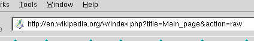
The query string is a part of the URL which is passed to the program. Its use permits data to be passed from the HTTP client (often a web browser) to the program which generates the web page.
When we split the line on "&" symbols...
https://maps.google.ca/maps?
f = q
source = s_q
hl = en
geocode =
q = City+Hall+Library,+Queen+Street+West,+Toronto,+ON
aq = 0
oq = city+hal
sll = 43.656877,-79.32085
sspn = 0.927981,2.113495
ie = UTF8
hq = City+Hall+Library,
hnear = Queen+Street+West,+Old+Toronto,+Toronto,+Toronto+Division,+Ontario
t = m
z = 14
iwloc = A
cid = 2599218500484294781
ll = 43.653023,-79.383602
output = embed
Hashes,
Key / Value Pairs,
Dictionaries,
and Associative Array's
https://en.wikipedia.org/wiki/Associative_array
In computer science, an associative array, map, symbol table, or dictionary is an abstract data type composed of a collection of (key, value) pairs, such that each possible key appears at most once in the collection.
# ruby example
person: {
name: "Sally",
height: "5 feet, 4 inches",
age: 27
}
Twitter (where to find)
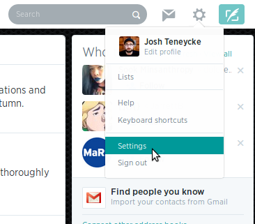Twitter (where to find)
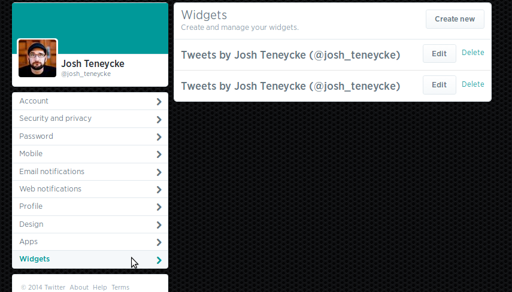Twitter (where to find)
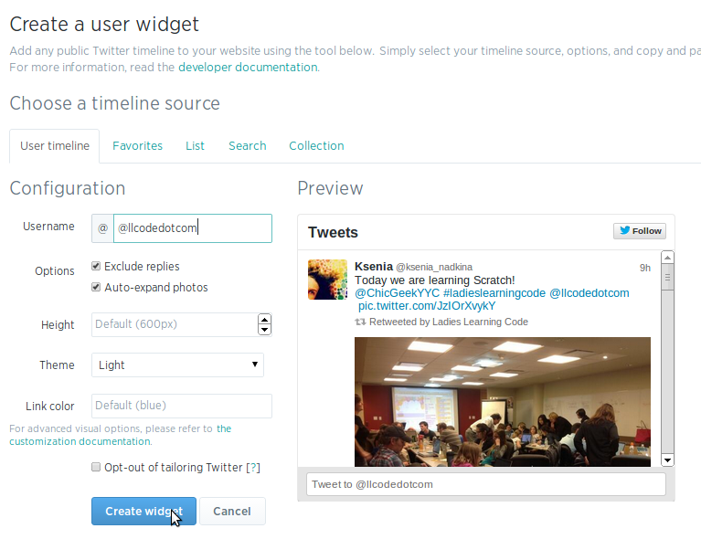Twitter (where to find)
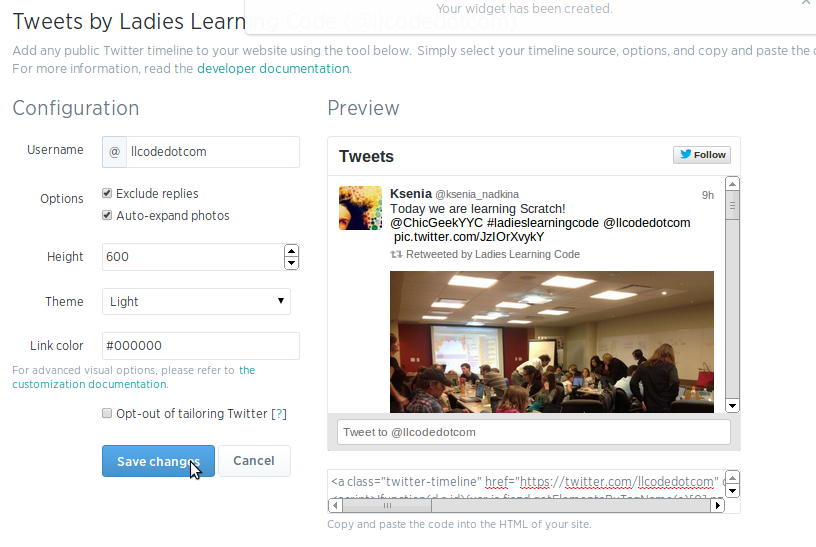
<a class="twitter-timeline"
data-dnt="true"
href="https://twitter.com/llcodedotcom"
data-widget-id="475512175075667968">
Tweets by @josh_teneycke
</a>
! function (d, s, id) {
var js,
fjs = d.getElementsByTagName(s)[0],
p = /^http:/.test(d.location) ? 'http' : 'https';
if(!d.getElementById(id)) {
js = d.createElement(s);
js.id = id;
js.src = p + "://platform.twitter.com/widgets.js";
fjs.parentNode.insertBefore(js, fjs);
}
}(document, "script", "twitter-wjs");
Embedded Timelines
Tweet Button
Twitter (example)
Tweets by @llcodedotcomPintrest (where to find)
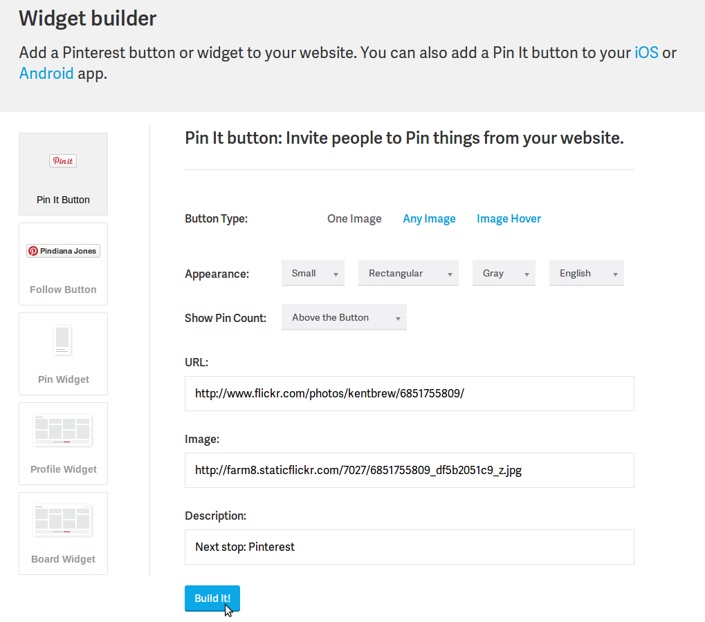Pintrest "Pin it" Button
Button Builder
<a href="//www.pinterest.com/pin/create/button/?url=http%3A%2F%2Fwww.flickr.com%2Fphotos%2Fkentbrew%2F6851755809%2F&media=http%3A%2F%2Ffarm8.staticflickr.com%2F7027%2F6851755809_df5b2051c9_z.jpg&description=Next%20stop%3A%20Pinterest"
data-pin-do="buttonPin"
data-pin-config="above">
<img src="//assets.pinterest.com/images/pidgets/pinit_fg_en_rect_gray_20.png" />i
</a>
<!-- Please call pinit.js only once per page -->
<script type="text/javascript"
async
src="//assets.pinterest.com/js/pinit.js">
</script>

Bonus Round
Must read Articles
Getting Anwsers - Mike AshHow to be a better Junior Developer - @kwugirl
Must have Browser Plug-ins
OneTab Chrome ExtensionAdblock
JS Beautifier
CSS Beautifier